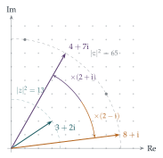

STEP II 2023，第 7 題
繼續之前，請先閱讀題目（原題為英文）。題目載於 OCR 提供下載的 2023 年 STEP 試卷（zip 檔案）內的 STEP II 試卷： www.ocr.org.uk/Images/707102-2023-past-papers.zip
引子
哪些整數可以寫成兩個平方數之和？\(5 = 1^2 + 2^2\) 和 \(13 = 2^2 + 3^2\) 可以，但 \(3\)、\(7\) 和 \(21\) 卻不行。這裏有一個奇怪的事實：\(65 = 5 \times 13\) 可以用兩種不同的方法寫成兩個平方數之和，即 \(1^2 + 8^2\) 和 \(4^2 + 7^2\)。為甚麼兩個這樣的數相乘，會得出另一個這樣的數？又為甚麼會有兩種寫法？
答案來自一個意想不到的方向。這道題目要你放下整數，改用複數（complex number）來思考。在複數的世界裏，兩平方和變得很簡單，一些看似令人摸不着頭腦的算術也變得近乎機械化。
動筆之前
若 \(z = a + \mathrm{i}b\)，其中 \(a\) 和 \(b\) 為整數，那麼 \(|z|^2\) 是甚麼？
它是 \(a^2 + b^2\)，即兩個平方數之和。所以「\(N\) 是兩個平方數之和」的意思正正就是「存在某個實部（real part）和虛部（imaginary part）皆為整數的複數 \(z\)，使得 \(N = |z|^2\)」。這樣的複數稱為高斯整數（Gaussian integer）。請牢記這個轉譯；整道題目都建基於此。
逐步解題
階段 1 模相乘
以 \(a\)、\(b\)、\(c\)、\(d\) 寫出 \(zw\)。關於 \(|zw|^2\)，你需要證明甚麼？
我們有 \(zw = (ac - bd) + \mathrm{i}(ad + bc)\)，所以 \[|zw|^2 = (ac - bd)^2 + (ad + bc)^2 = a^2c^2 + b^2d^2 + a^2d^2 + b^2c^2,\] 因為交叉項 \(-2abcd\) 和 \(+2abcd\) 互相抵消。而這個式子可以因式分解（factorise）： \[a^2c^2 + b^2d^2 + a^2d^2 + b^2c^2 = (a^2 + b^2)(c^2 + d^2) = |z|^2|w|^2.\] 取平方根，得 \(|zw| = |z||w|\)。■
現在把它看成一個關於整數的命題： \[(a^2 + b^2)(c^2 + d^2) = (ac - bd)^2 + (ad + bc)^2. \tag{$\star$}\] 兩個兩平方和的乘積，仍是一個兩平方和，而複數更確切地告訴你那兩個平方數是甚麼。
階段 2 學以致用
第 (ii) 部分：\(5 = |2 + \mathrm{i}|^2\)，而 \(221 = 10^2 + 11^2 = |10 + 11\mathrm{i}|^2\)。於是相乘： \[(2 + \mathrm{i})(10 + 11\mathrm{i}) = 20 + 22\mathrm{i} + 10\mathrm{i} - 11 = 9 + 32\mathrm{i},\] 得出 \(5 \times 221 = 9^2 + 32^2\)。（驗算：\(81 + 1024 = 1105\)。）
如果改為把 \(10 + 11\mathrm{i}\) 乘以 \(2 - \mathrm{i}\)，會怎麼樣？它的模（modulus）與 \(2 + \mathrm{i}\) 的相同。
\((2 - \mathrm{i})(10 + 11\mathrm{i}) = 20 + 22\mathrm{i} - 10\mathrm{i} + 11 = 31 + 12\mathrm{i}\)，所以同樣有 \(1105 = 31^2 + 12^2\)。選用 \(2 + \mathrm{i}\) 還是它的共軛（conjugate），會得出不同的表示法。這就解釋了引子中 \(65\) 的兩種寫法（圖 1.6.1）：\(65 = |(2+\mathrm{i})(3+2\mathrm{i})|^2 = |4 + 7\mathrm{i}|^2\) 以及 \(65 = |(2-\mathrm{i})(3+2\mathrm{i})|^2 = |8 + \mathrm{i}|^2\)。

階段 3 先作因式分解
\(8045\) 的末位數字是 \(5\)。這提示了甚麼？
\(8045 = 5 \times 1609\)。我們需要把 \(1609\) 寫成兩個平方數之和；試試略小於 \(1609\) 的平方數，很快便找到 \(1609 = 40^2 + 3^2\)。於是 \[(2 + \mathrm{i})(40 + 3\mathrm{i}) = 77 + 46\mathrm{i}, \qquad\text{所以}\qquad 8045 = 77^2 + 46^2,\] 而共軛亦給出 \(8045 = 83^2 + 34^2\)。
第 (iv) 部分更快：\(36 = 6^2 + 0^2\)，而乘以 \(6\) 只是按比例放大：\(36 \times 50805 = 612^2 + 1206^2\)。
階段 4 三種寫法
\(25\) 可以用多於一種方法寫成兩個平方數之和。若不計正負號和次序對調，有多少個高斯整數的模為 \(5\)？
\(25 = 5^2 + 0^2 = 3^2 + 4^2\)，分別對應 \(5\)、\(3 + 4\mathrm{i}\) 和 \(3 - 4\mathrm{i}\)。接着看 \(1002082\)：由於 \(1001^2 = 1002001\)，我們有 \(1002082 = 1001^2 + 9^2\)。把 \(1001 + 9\mathrm{i}\) 分別乘以這三個數，得： \[\begin{aligned} 5\,(1001 + 9\mathrm{i}) &= 5005 + 45\mathrm{i}, \\ (3 + 4\mathrm{i})(1001 + 9\mathrm{i}) &= 2967 + 4031\mathrm{i}, \\ (3 - 4\mathrm{i})(1001 + 9\mathrm{i}) &= 3039 - 3977\mathrm{i}. \end{aligned}\] 所以三對 \((r, s)\) 是 \((45, 5005)\)、\((2967, 4031)\) 和 \((3039, 3977)\)。
階段 5 除法
第 (vi) 部分把這部機器倒過來運轉。我們知道 \(109 = 10^2 + 3^2\) 和 \(1002037 = 1001^2 + 6^2\)。怎樣才能不靠搜尋，就把 \(9193\) 寫成兩個平方數之和？
既然高斯整數相乘時模會相乘，那麼相除時模就應該相除。試試 \[\frac{1001 + 6\mathrm{i}}{10 + 3\mathrm{i}} = \frac{(1001 + 6\mathrm{i})(10 - 3\mathrm{i})}{109} = \frac{10028 - 2943\mathrm{i}}{109} = 92 - 27\mathrm{i}.\] 剛好整除，所以 \(9193 = 92^2 + 27^2\)。（驗算：\(8464 + 729 = 9193\)。）
如果改為除以 \(10 - 3\mathrm{i}\)，會怎麼樣？
你會得到 \((1001 + 6\mathrm{i})(10 + 3\mathrm{i})/109 = (9992 + 3063\mathrm{i})/109\)，這不是高斯整數，因為 \(9992/109\) 不是整數。在 \(109\) 的兩個「因數」之中，只有一個能整除 \(1001 + 6\mathrm{i}\)，正如只有某些質數（prime）能整除一個給定的整數。高斯整數有它們自己的質數，也有它們自己的因式分解。
回顧
轉譯、求解、再譯回來。「兩個平方數之和」變成了「高斯整數的模的平方」。用這種語言來說，問題就變得容易。
先作因式分解。每一部分都是先把一個大數拆成較小的數，而這些較小的數的表示法很容易找到。
共軛帶來新答案。表示法的數目，取決於有多少種方法選擇一個因數或它的共軛。
背後的數學
哪些質數是兩個平方數之和？\(2 = 1^2 + 1^2\)、\(5\)、\(13\)、\(17\)、\(29\)、\(37\)、\(41\) 是；\(3\)、\(7\)、\(11\)、\(19\)、\(23\)、\(31\) 則不是。規律是：除 \(2\) 以外，一個質數是兩個平方數之和，當且僅當它除以 \(4\) 的餘數為 \(1\)。費馬（Fermat）於 1640 年提出這個結果；歐拉（Euler）於 1749 年給出證明。用高斯整數的語言來說：質數 \(p \equiv 1 \pmod 4\) 會分裂（split）成 \(p = (a + b\mathrm{i})(a - b\mathrm{i})\)，而質數 \(p \equiv 3 \pmod 4\) 則仍然是質數。例如 \(5 = (2 + \mathrm{i})(2 - \mathrm{i})\)，但 \(3\) 完全無法分解。
1990 年，Don Zagier 發表了二平方和定理的一個證明，它以全長只有一句而聞名。這個證明連同解說收錄於 Proofs from THE BOOK。
一個擁有自己質數的新數系
高斯（Gauss）發現，高斯整數的表現與普通整數極為相似。它們有除法算法（division algorithm）和歐幾里得算法（Euclidean algorithm），而且每個高斯整數都可以唯一地分解成高斯質數（Gaussian prime）的乘積（不計乘以 \(\pm1\) 或 \(\pm\mathrm{i}\) 的差別）。結合 \((\star)\)，你只需知道一個數的質因數分解，就能準確數出它有多少種方法寫成兩個平方數之和。
在大學裏，這是通往代數數論（algebraic number theory）的大門：研究 \(\mathbb{Z}[\mathrm{i}]\) 或 \(\mathbb{Z}[\sqrt{-5}]\) 這類數系，藉此了解普通的整數。第 1.7 節 說明了為甚麼需要創立這門學科：並非每個這樣的數系都像高斯整數那樣規矩。
四個平方數及其他
每個正整數都是四個平方數之和（拉格朗日（Lagrange），1770 年）。證明依賴 \((\star)\) 的四平方版本，它源自哈密頓（Hamilton）的四元數（quaternion），情形就如 \((\star)\) 源自複數一樣。你會在 第 7.8 節 見到它。
思維技巧
一個問題在某個數系中顯得棘手，在一個更大的數系中卻可能十分自然。
兩平方和在整數中很棘手，在複數中卻不過是模而已。數學家經常這樣擴大數系：由整數到有理數，由有理數到實數，由實數到複數。每次擴大，都會令一些舊問題變得容易。
延伸練習
一個障礙。證明沒有任何形如 \(4k + 3\) 的數是兩個平方數之和。（平方數模 \(4\) 是甚麼？）
兩種寫法。把 \(65\) 和 \(85\) 各自用兩種不同的方法寫成兩個平方數之和，並用高斯整數解釋你的答案。
四種寫法。\(1105 = 5 \times 13 \times 17\)。找出四種不同的方法，把 \(1105\) 寫成兩個正平方數之和。為甚麼是四種？
高斯質數。 較難 證明若 \(3 = (a + b\mathrm{i})(c + d\mathrm{i})\)，其中 \(a, b, c, d\) 為整數，則其中一個因數的模為 \(1\)。（取模的平方。）這說明 \(3\) 是高斯質數。
延伸閱讀
John Stillwell, Elements of Number Theory（Springer）。循序漸進講到高斯整數及更深入的內容，並附歷史背景。
Aigner & Ziegler, Proofs from THE BOOK，第 4 章，“Representing numbers as sums of two squares”（把數表示為兩個平方數之和）。
Joseph Silverman, A Friendly Introduction to Number Theory，有關平方和與高斯整數的各章。